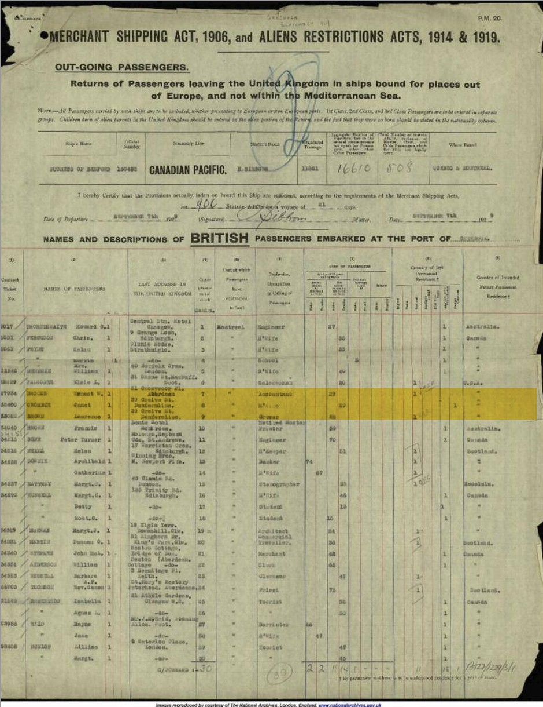

Item 34 · September 7, 1929
Outward passenger list: Duchess of Bedford, Greenock
The document

This copy carries yellow highlighting or red outlining added for the book site. It is not on the original.
Tap an image to open it full size.
Transcription, word for word
Everything as written, including misspellings. [?] marks an uncertain reading. Struck-through words are marked as struck through. Notes in square brackets describe the page and are not part of it.
[Printed, top right] P.M. 20. [Printed] MERCHANT SHIPPING ACT, 1906, and ALIENS RESTRICTIONS ACTS, 1914 & 1919. [Printed] OUT-GOING PASSENGERS. [Printed] Returns of Passengers leaving the United Kingdom in ships bound for places out of Europe, and not within the Mediterranean Sea. [Printed note, small type, not legible at this resolution] [A large blue pencil scribble across the top of the form] Ship's Name: DUCHESS OF BEDFORD. Official Number: 160482. Steamship Line: CANADIAN PACIFIC. Master's Name: R. GIBSON[?]. Registered Tonnage: 11801[?]. [Handwritten figures] 16610. 505. Where Bound: QUEBEC & MONTREAL. [Printed] I hereby Certify that the Provisions actually laden on board this Ship are sufficient, according to the requirements of the Merchant Shipping Acts, for 900 [handwritten] Statute Adults for a voyage of 21 days. Date of Departure: SEPTEMBER 7th 1929. (Signature) [signature, illegible] Master. Date: SEPTEMBER 7th 1929. [Printed] NAMES AND DESCRIPTIONS OF BRITISH PASSENGERS EMBARKED AT THE PORT OF GREENOCK[?]. [Columns] (1) Contract Ticket No. | (2) Names of Passengers | (3) Last Address in the United Kingdom | (4) Class (Cabin) | (5) Port at which Passengers have contracted to land | (6) Profession, Occupation or Calling of Passengers | (7) Ages of Passengers: Adults of 12 years and upwards (accompanied by husband or wife / not accompanied), Children between 1 and 12, Infants: Males, Females | (8) Country of last Permanent Residence: England, Wales, Scotland, Northern Ireland, Irish Free State, Other parts of the British Empire, Foreign Countries | (9) Country of Intended Future Permanent Residence [Ticket numbers on the left edge are partly cut off.] ...017 | THORNTHWAITE Howard G. 1 | Central Stn. Hotel Glasgow. | 1 | Montreal | Engineer | M 27 | 1 | Australia. ...091 | FERGUSON Chris. 1 | 9 Grange Loan, Edinburgh. | 2 | " | H'wife | F 35 | 1 | Canada ...061 | PRYDE Helen 1 | Clunie House, Strathmiglo. | 3 | " | H'wife | F 25 | 1 | " " Morris 1 | -do- | 4 | " | School | child 5 | 1 | " ...1546 | MENZIES Mrs. William 1 | 20 Norfolk Cres. London. | 5 | " | H'wife | F 40 | 1 | " ...129 | FALCONER Elsie L. 1 | 31 Shore St. Macduff. Scot. | 6 | " | Saleswoman | F 20 | 1 [written beside: USA] | U.S.A. 27934 | BROOKS Ernest W. 1 | 21 Grosvenor Pl. Aberdeen | 7 | " | Accountant | M 27 | 1 [written beside: USA] | " ...480 | CROMBIE Janet 1 | 39 Greive St. Dunfermline. | 8 | " | H'wife | F 29 | [1 in the Foreign Countries column] | " ...082 | BROWN Laurence 1 | 39 Greive St. Dunfermline. | 9 | " | Grocer | M 22 | 1 [written beside: USA] | " ...040 | BROWN Francis 1 | Bents Hotel Montrose. | 10 | " | Retired Master Printer | M 59 | 1 | Australia. ...215 | BONE Peter Turner 1 | Mologa, Hepburn Gds, St. Andrews. | 11 | " | Engineer | M 70 | 1 | Canada ...516 | NEILL Helen 1 | 17 Warriston Cres. Edinburgh. | 12 | " | H'keeper | F 51 | 1 | Scotland. ...228 | DOWNIE Archibald 1 | Winning Brae, N. Newport Fife. | 13 | " | Banker | M 74 | 1 | " " Catherine 1 | -do- | 14 | " | H'wife | F 67 | 1 | " ...237 | RATTRAY Margt.C. 1 | 49 Glamis Rd. Dundee. | 15 | " | Stenographer | F 33 | 1 [written beside, illegible] | Honolulu. ...292 | RUSSELL Margt.G. 1 | 125 Trinity Rd. Edinburgh. | 16 | " | H'wife | F 45 | 1 | Canada " Betty 1 | -do- | 17 | " | Student | F 15 | 1 | " " Robt.G. 1 | -do- | 18 | " | Student | M 16 | 1 | " ...329 | McNAB Margt.J. 1 | 19 Elgin Terr. Dowanhill, Gla. | 19 | " | Architect | F 24 | 1 | " ...331 | MARTIN Duncan G. 1 | 51 Kinghorn Dr. King's Park, Gla. | 20 | " | Commercial Traveller. | M 36 | 1 | Scotland. ...340 | STEPHEN John Mel. 1 | Benton Cottage, Bridge of Don. | 21 | " | Merchant | M 62 | 1 | Canada ...331 | ANDERSON William 1 | Benton (Aberdeen) Cottage -do- | 22 | " | Clerk | M 65 | 1 | " ...353 | RUSSELL Barbara A.F. 1 | 3 Hermitage Pl. Leith. | 23 | " | Clerkess | F 47 | 1 | " ...703 | THOMSON Rev.Canon 1 | St.Mary's Rectory Peterhead. Aberdeens. | 24 | " | Priest | M 75 | 1 | Scotland. ...149 | ROBERTSON Isabella 1 | 21 Athole Gardens, Glasgow W.2. | 25 | " | Tourist | F 52 | 1 | Canada " Agnes L. 1 | -do- | 26 | " | " | F 50 | 1 | " ...988 | REID Mayne 1 | Mr.J.McNeid[?], Lonning[?] Alloa. Scot. | 27 | " | Barrister | M 46 | 1 | " " Jane 1 | -do- | 28 | " | H'wife | F 47 | 1 | " 98408 | DUNLOP Lillian 1 | 8 Waterloo Place, London. | 29 | " | Tourist | F 47 | 1 | " " Margt. 1 | -do- | 30 | " | " | F 45 | 1 | " [Bottom] C/FORWARD 1-30 [handwritten] 30. [circled] 30. [Column totals, handwritten] 2 2 11 14 1 – – – – 11 16 1. [Handwritten] B727/1229/3/1[?] [Printed, bottom] † By permanent residence is to be understood residence for a year or more. [Printed, below the page] Images reproduced by courtesy of The National Archives, London, England. www.nationalarchives.gov.uk [Note: ages in column (7) are entered under Male or Female; children's ages under the children's columns. Ticket numbers and some small entries are hard to read on this copy; uncertain readings are marked [?].]